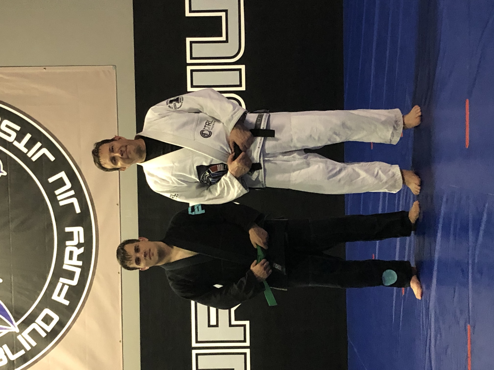
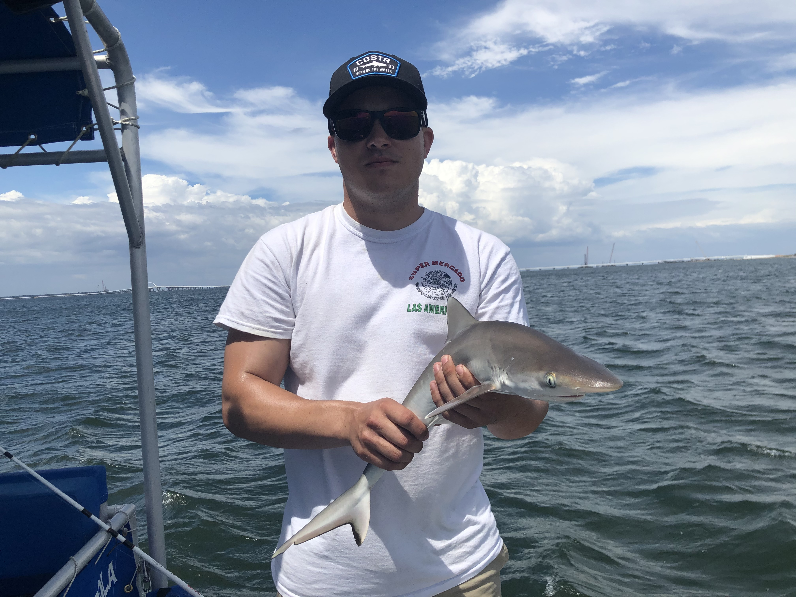

Age: 30
DOB: 5/10/1991
Proudest Moment: Becoming a Father
I have been training Brazilian Jiu jitsu and Judo for almost 4 years now. It is an essential part of my life and good tool for balance and stress relief. I am currently a blue belt in Brazilian Jiu jitsu and a green belt in Judo.
I enjoy regularly going fishing and spending time in the outdoors. Hints all the pictures of nature you will find on my profile(all taken by me)!
I enjoy learning new languages and practicing them to proficiency. I am fluent in Spanish, can speak conversational everyday American Sign Language, and I am currently studying Korean.